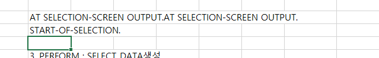

20221020

REPORT ZEDUR001_20221020 MESSAGE-ID ZMEDU1.
*MESSAGE I000.
*EXIT.
TABLES: ZEDU1_003, ZEDU1_004.
DATA: BEGIN OF GS_STUDENT.
INCLUDE TYPE ZEDU1_003.
DATA: ZYEAR TYPE ZEDU1_004-ZYEAR,
ZSEMESTER TYPE ZEDU1_004-ZSEMESTER,
ZGRADE TYPE ZEDU1_004-ZGRADE.
DATA: END OF GS_STUDENT.
DATA: GT_STUDENT LIKE TABLE OF GS_STUDENT.
DATA: BEGIN OF GS_ZEDU15_003.
INCLUDE TYPE ZEDU15_003.
DATA: END OF GS_ZEDU15_003.
DATA: GT_ZEDU15_003 LIKE TABLE OF GS_ZEDU15_003.
DATA: BEGIN OF GS_ZEDU15_004.
INCLUDE TYPE ZEDU15_004.
DATA: END OF GS_ZEDU15_004.
DATA: GT_ZEDU15_004 LIKE TABLE OF GS_ZEDU15_004.
SELECTION-SCREEN BEGIN OF BLOCK B1 WITH FRAME.
PARAMETERS: P_CODE LIKE ZEDU1_003-BUKRS DEFAULT '1100' OBLIGATORY.
SELECT-OPTIONS: S_CODE FOR ZEDU1_003-ZCODE DEFAULT 'SSU-01' TO 'SSU-99' OBLIGATORY.
PARAMETERS: P_YEAR LIKE ZEDU1_003-Z_EDATE DEFAULT SY-DATUM OBLIGATORY.
PARAMETERS: P_SEMES LIKE ZEDU1_004-ZSEMESTER.
SELECT-OPTIONS: S_MAJOR FOR ZEDU1_003-Z_MAJOR MATCHCODE OBJECT ZSH15_3 NO INTERVALS.
SELECT-OPTIONS: S_DMAJOR FOR ZEDU1_003-Z_MAJOR_DOUBLE MATCHCODE OBJECT ZSH15_3 MODIF ID M1 NO INTERVALS.
SELECTION-SCREEN END OF BLOCK B1.
SELECTION-SCREEN BEGIN OF BLOCK B2 WITH FRAME.
SELECTION-SCREEN BEGIN OF LINE.
PARAMETERS: P_UNGRAD RADIOBUTTON GROUP R1 DEFAULT 'X' USER-COMMAND UC1.
SELECTION-SCREEN POSITION 3.
SELECTION-SCREEN COMMENT (10) FOR FIELD P_UNGRAD.
PARAMETERS: P_GRAD RADIOBUTTON GROUP R1.
SELECTION-SCREEN POSITION 20.
SELECTION-SCREEN COMMENT (10) FOR FIELD P_GRAD.
PARAMETERS: P_ALL RADIOBUTTON GROUP R1.
SELECTION-SCREEN POSITION 37.
SELECTION-SCREEN COMMENT (10) FOR FIELD P_ALL.
SELECTION-SCREEN END OF LINE.
SELECTION-SCREEN END OF BLOCK B2.
SELECTION-SCREEN BEGIN OF BLOCK B3 WITH FRAME.
PARAMETERS: P_GAP LIKE ZEDU1_003-Z_CLASS.
SELECTION-SCREEN END OF BLOCK B3.
AT SELECTION-SCREEN OUTPUT.
PERFORM SET_SCREEN.
START-OF-SELECTION.
*BREAK-POINT.
PERFORM: SELECT_DATA.
PERFORM: UPDATE_DATA.
WRITE:/ '회사코드', '학생코드', '입학일자', '졸업일자', '학적구분', '휴학구분', '전공학과명',
'복수전공학과명', '등록금액', '학기구분', '장학구분', '납부금액'.
LOOP AT GT_STUDENT INTO GS_STUDENT.
SELECT * FROM ZEDU15_003 INTO CORRESPONDING FIELDS OF TABLE GT_ZEDU15_003 WHERE ZCODE = GS_STUDENT-ZCODE.
SELECT * FROM ZEDU15_004 INTO CORRESPONDING FIELDS OF TABLE GT_ZEDU15_004 WHERE ZCODE = GS_STUDENT-ZCODE.
DATA: LV_SCHOLAR TYPE C.
DATA: LV_COUNT TYPE I.
WRITE:/ GS_STUDENT-BUKRS, GS_STUDENT-ZCODE, GS_STUDENT-Z_EDATE, GS_STUDENT-Z_GDATE,
GS_STUDENT-Z_GUBUN, GS_STUDENT-Z_CLASS, GS_STUDENT-Z_MAJOR, GS_STUDENT-Z_MAJOR_DOUBLE,
GS_STUDENT-ZSEMESTER.
LOOP AT GT_ZEDU15_004 INTO GS_ZEDU15_004.
CASE GS_ZEDU15_004-ZGRADE.
WHEN 'A'.
LV_COUNT = LV_COUNT + 1.
ENDCASE.
ENDLOOP.
CASE LV_COUNT.
WHEN 2.
LV_SCHOLAR = 'X'.
WRITE: LV_SCHOLAR.
ENDCASE.
DATA: LV_AMOUNT TYPE ZEDU15_003-Z_AMOUNT.
CASE LV_SCHOLAR.
WHEN 'X'.
LV_AMOUNT = GS_STUDENT-Z_AMOUNT / 10 * 9.
WRITE: LV_AMOUNT.
WHEN OTHERS.
WRITE: GS_STUDENT-Z_AMOUNT.
ENDCASE.
CLEAR: LV_SCHOLAR, LV_COUNT.
ENDLOOP.
FORM SELECT_DATA.
SELECT * FROM ZEDU1_003 INTO CORRESPONDING FIELDS OF TABLE GT_STUDENT
WHERE BUKRS = P_CODE AND ZCODE IN S_CODE AND Z_EDATE GE '20220101'
AND Z_MAJOR IN S_MAJOR AND Z_MAJOR_DOUBLE IN S_DMAJOR.
SELECT * FROM ZEDU15_003 INTO CORRESPONDING FIELDS OF TABLE GT_ZEDU15_003
WHERE BUKRS = P_CODE
AND ZCODE IN S_CODE
AND Z_EDATE LE P_YEAR
AND Z_MAJOR IN S_MAJOR
AND Z_MAJOR_DOUBLE IN S_DMAJOR.
DATA: LV_SEMESTER LIKE ZEDU15_004-ZSEMESTER.
CASE P_YEAR.
WHEN '20220701'.
LV_SEMESTER = 1.
WHEN OTHERS.
LV_SEMESTER = 2.
ENDCASE.
SELECT * FROM ZEDU15_004 INTO CORRESPONDING FIELDS OF TABLE GT_ZEDU15_004
WHERE ZCODE = S_CODE AND ZYEAR = '2022'
AND ZSEMESTER = LV_SEMESTER.
ENDFORM.
FORM UPDATE_DATA.
IF GT_STUDENT IS INITIAL.
MODIFY ZEDU1_003 FROM TABLE GT_ZEDU15_003.
ELSE.
MODIFY ZEDU1_003 FROM TABLE GT_ZEDU15_003.
ENDIF.
ENDFORM.
FORM SET_SCREEN.
LOOP AT SCREEN.
IF SCREEN-GROUP1 = 'M1'.
IF P_UNGRAD = 'X'.
SCREEN-ACTIVE = '1'.
ELSE.
SCREEN-ACTIVE = '0'.
ENDIF.
ENDIF.
MODIFY SCREEN.
ENDLOOP.
ENDFORM.